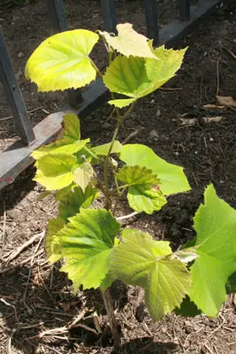

pranet · 出典付きの植物図鑑
アメリカブドウ
Vitis labrusca L. · Vitaceae

アメリカブドウ は、ブドウ科ブドウ属のつる性低木植物である。学名からラブルスカ種と呼ばれることもある。北アメリカ大陸東部からカナダ南東部に自生し、栽培品種としてカトーバ、コンコードがある。また、交雑種としてアガワム 、 アレキサンダー、キャンベル・アーリー、デラウェアなどがある。 ヨーロッパブドウ とは違い、果実に圧力を加えると簡単に果皮と果肉が分離（スリップスキン）し、また、樹枝の節ごとに巻きづるが発生する。そして、最もよく知られた特徴として「狐臭」という独特の香りであり、それはコンコードブドウからほとんどの人に知られている。この香りはキツネとは関連はないが、その特徴のある香りは、アメリカの初期の入植者に知られていた。「狐臭」という用語は、ヨーロッパブドウで作られたワインにはない香りを表す用語として使われている。
出典: Wikipedia 日本語版「アメリカブドウ」 · CC BY-SA 4.0
異名: Vitis blanda Raf., Vitis bracteata Raf., Vitis cana Raf., Vitis canina Raf., Vitis catawba K.Koch, Vitis ciliata Raf., Vitis digitata Raf., Vitis ferruginea Raf., Vitis labruscoides Muhl. & Raf., Vitis latifolia Raf., Vitis luteola Raf., Vitis obliqua Raf., Vitis obovata Raf., Vitis occidentalis W.Bartram, Vitis palmata Leconte, Vitis rufa Raf., Vitis rugosa Raf., Vitis taurina Walter, Vitis tenuifolia Leconte
同定や利用は自己責任でお願いします。この図鑑だけを根拠に野生の植物を食べないでください。
出典
- 学名: World Flora Online Plant List 2026-06 · CC0 1.0
- 名前: Wikipedia の記事名と Wikidata · CC0 1.0（Wikidata）。記事名は事実
- 説明: Wikipedia 日本語版「アメリカブドウ」 · CC BY-SA 4.0
- 食用・毒性: World Checklist of Useful Plant Species (Diazgranados et al. 2020, RBG Kew) · CC BY 4.0
- 分布: World Checklist of Vascular Plants (WCVP), RBG Kew, version 2026-06-04 · CC BY 3.0
このページは pranet のデータから自動生成しています。コードは MIT、データは項目ごとのライセンス（説明）。